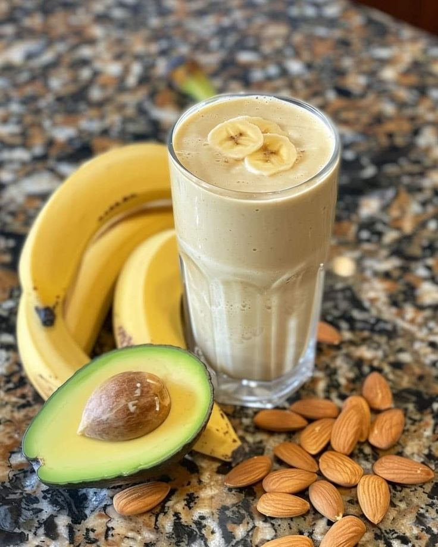
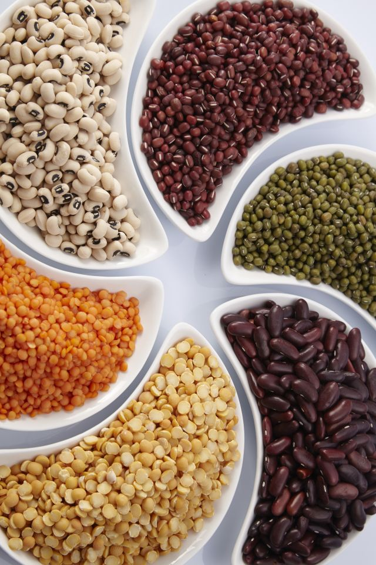

Blood pressure is the force of blood pushing against the walls of the arteries as the heart pumps blood through the body. It is important for carrying oxygen and nutrients to different parts of the body. When blood pressure becomes too high, it is called high blood pressure or hypertension, which can increase the risk of heart disease and stroke. Factors such as stress, unhealthy diet, too much salt, lack of exercise, and smoking can raise blood pressure. Maintaining a healthy lifestyle, eating balanced food, exercising regularly, and having regular medical checkups can help keep blood pressure under control. ❤️

